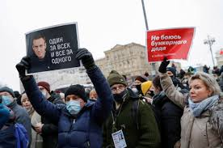

U.S. and EU — Condemn Russia’s Arrests of Navalny Protesters
The US and the EU have strongly condemned the violent repression of the Russian security forces against the demonstrators demanding the release of the country’s opposition chief Alexei Navalny.The brutal actions of the Russian security forces against the demonstrators who took to the streets across the country demanding the unconditional release of Navalny.
Thousands of the opposition chief’s supporters took to the street to demonstrate his illegal detention upon his recent arrival in the country from Germany where he was undergoing treatment.
The US has sharply criticized the brutal actions of the Russian security forces against the demonstrators who took to the streets across the country demanding the unconditional release of Navalny.
'The United States strongly condemns the use of harsh tactics against protesters and journalists this weekend in cities throughout Russia.,' said the new State Department spokesman, Ned Price in a statement.
We call on Russian authorities to release all those detained for exercising their universal rights and for the immediate and unconditional release of Aleksey Navalny.We urge Russia to fully cooperate with the international community’s investigation into the poisoning of Aleksey Navalny and credibly explain the use of a chemical weapon on its soil.The statement added.
EU Foreign Ministers Want to Discuss Further Steps
The EU also reacted to the actions of the Russian authorities against the demonstrators.The EU Foreign Affairs Representative Josep Borrell criticized this sharply and said he regretted the numerous arrests, the disproportionate use of force, and the restriction of Internet and telephone connections.He is concerned and will discuss the next steps for the EU with the foreign ministers of the EU countries at a meeting in Brussels tomorrow.
As early as the middle of the week, representatives of member states described new EU sanctions over the arrest of Navalny as a realistic option.A decision will probably only be made if Navalny is to be held in custody for a longer period.At the foreign ministers’ meeting in Brussels, there will only be an initial exchange of views on the subject.
Tens of Thousands Responded to the Call to Protest
In Russia, tens of thousands of people across the country responded to Navalny’s call to protest yesterday.Civil rights activists said more than 3,400 people were arrested at rallies in more than 90 cities.
In Moscow alone, at least 1,360 demonstrators were arrested, as the portal OWD-Info announced.There were 523 more arrests in St.Petersburg.According to Russia’s child rights commissioner, around 300 minors have also been taken into custody.
The demonstrators protested against Kremlin leader Vladimir Putin and demanded the release of Navalny.The Kremlin critic was arrested in Moscow a week ago after his return from Germany.
He had been treated in Berlin after a poison attack in August for which the opposition officials hold the Kremlin responsible even though President Putin has always insisted that his Government had nothing to do with the alleged poisoning.
In what is being interpreted as a political witch-hunt, on Monday, a Russian court rushed to sentence Navalny to 30 days in prison for violating suspended sentences.
[bsa_pro_ad_space id=4]
Share on Facebook Tweet Follow us
Posted On: 2021-01-24T00:00:00
Posted By: Vincent Ferdinand




Content Date: 2021-01-24
Download Date: 2021-07-09
Document ID: L0C04EQGA